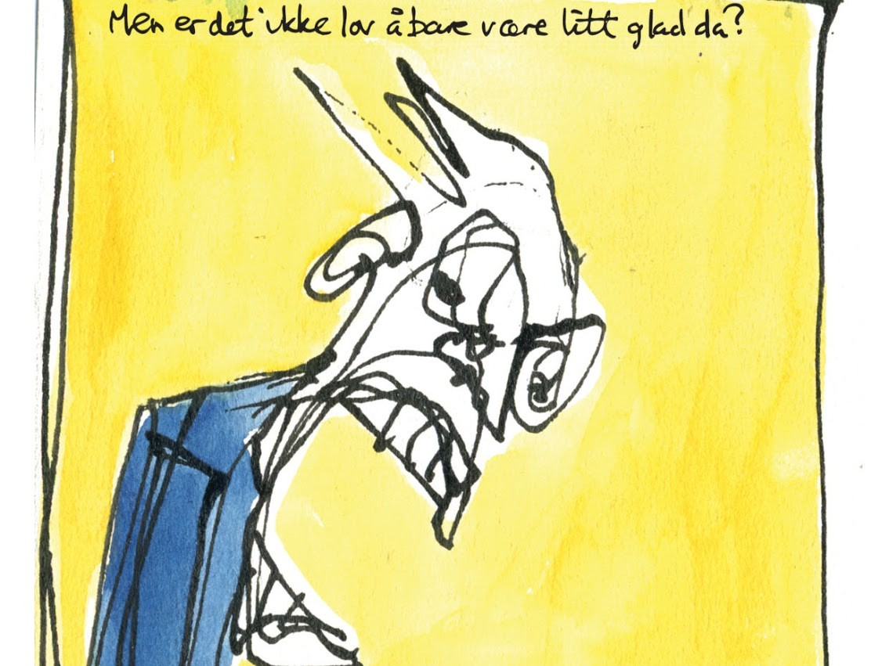
Lov å være glad
Teknikk, format og årstall.

Teknikk, format og årstall.
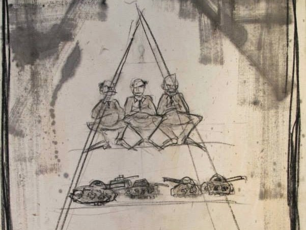
Kull og olje, 150x100 cm, 2014.
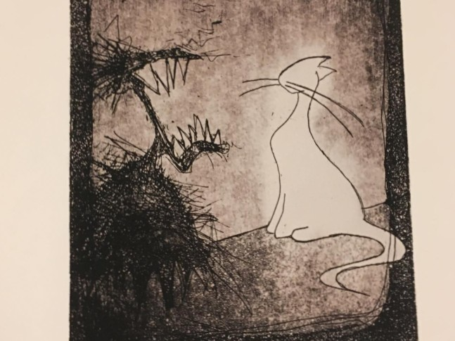
Teknikk, format og årstall.
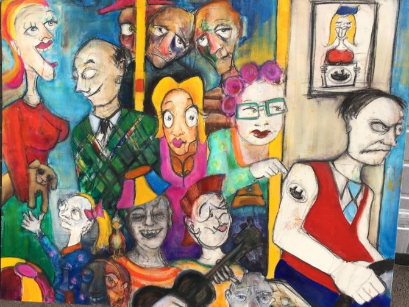
Olje, 150x120 cm.
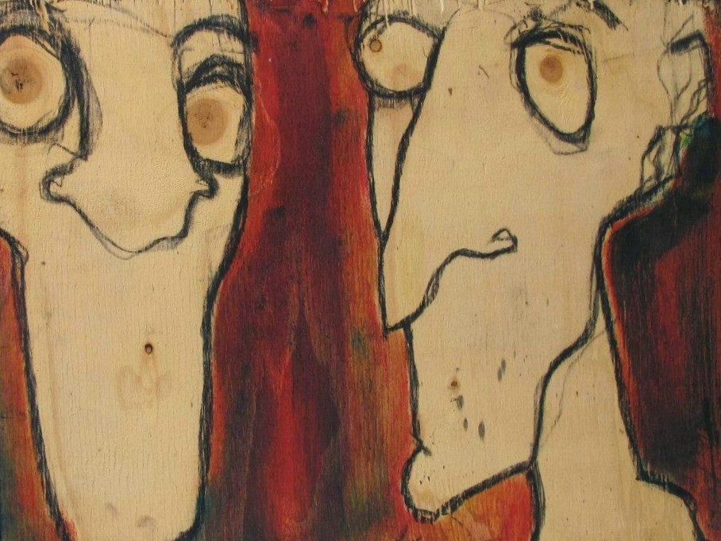
Teknikk, format og årstall.
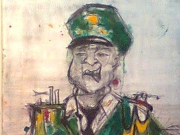
Olje, format og årstall.
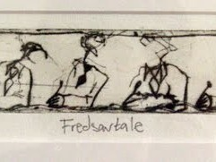
Teknikk, format og årstall.
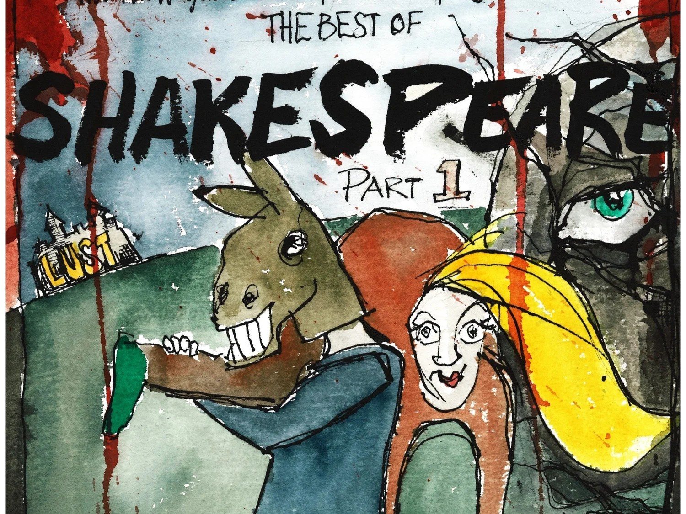
Teknikk, poster i A3 og 2015
Et utvalg utstillinger, intervjuer og omtaler.
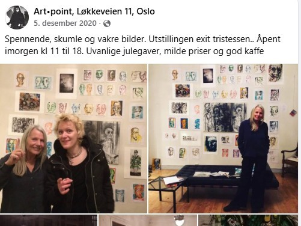
Utstillingen Exit Tristesse! Per Heimly fotografi, Øyvind Myhre litografi, Pia Fladseth tegning/olje · 2020
Les artikkelen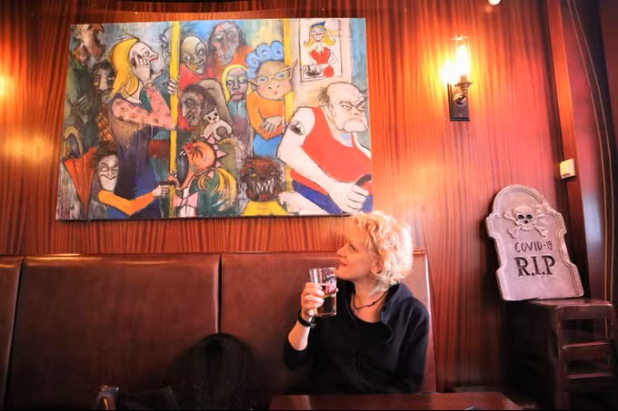
Avisa Oslo · 2022 . Intervju i forbindelse med egen boklansering.
Les intervjuet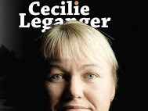
"I mål med mening" av Cecilie Leganger, illustrert av Pia Hveem Fladseth · 2018.
Les omtalenFor spørsmål om verk, oppdrag eller samarbeid, send en e-post til
fladseth@hotmail.com
© Pia Hveem Fladseth. Design: HTML5 UP.